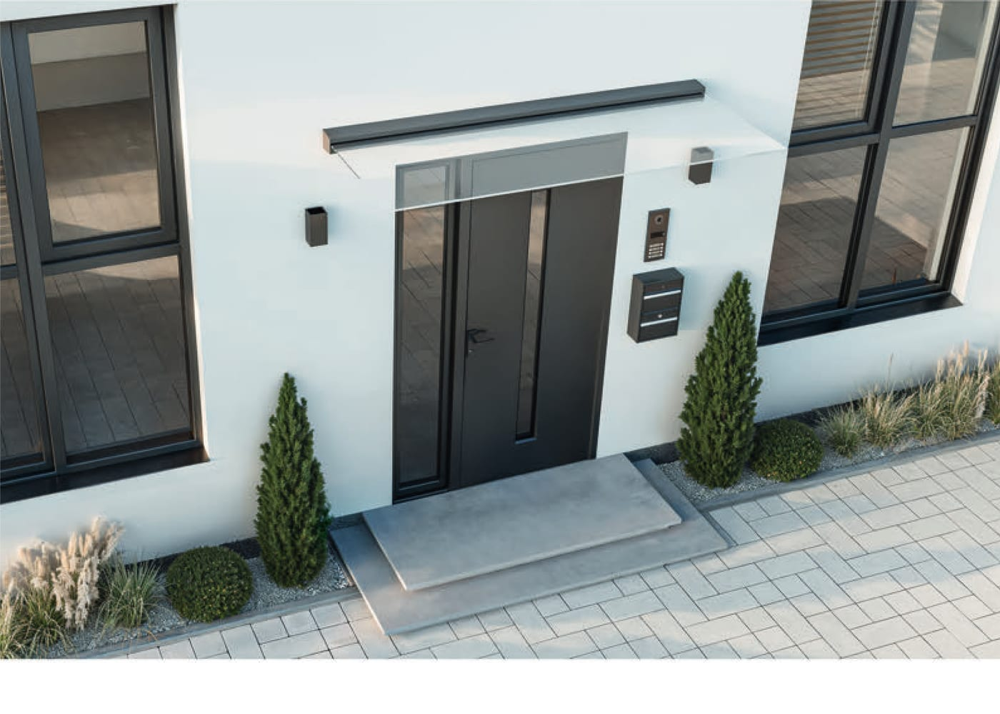
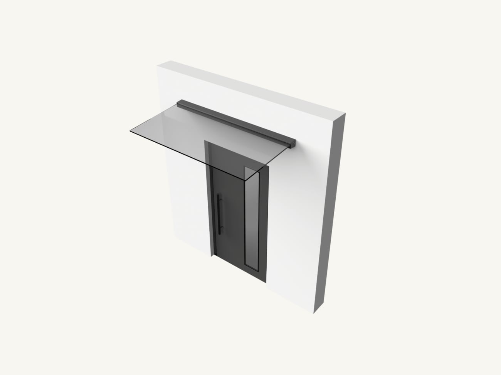
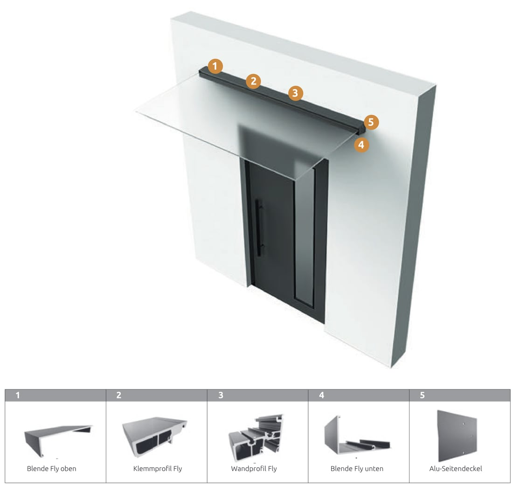

Beim Vordach FLY gibt es keine Pfosten, keine Konsolen und keine Seile. Die Glasscheibe sitzt in einem einzigen, formschönen Aluminiumprofil an der Fassade und kragt frei über den Eingang aus. So bleibt die Hausfront ruhig, und Tür, Klingel oder Hausnummer bleiben voll sichtbar.
Das Glas ist 16 mm starkes Einscheiben-Sicherheitsglas (ESG) – unempfindlich gegen Stöße und große Temperaturwechsel. Das Trägerprofil besteht aus pulverbeschichtetem Aluminium mit witterungsbeständiger Oberfläche. Wir fertigen FLY exakt auf die Breite Ihres Eingangs und montieren es fachgerecht.

Fünf Aluminium-Bauteile – mehr braucht ein schwebendes Glasvordach nicht.
Herzstück ist das Wandprofil, das direkt an der Fassade verschraubt wird. Darin klemmt ein zweites Profil die Glasscheibe sicher fest. Blenden oben und unten sowie Seitendeckel verkleiden die Technik, sodass von außen nur eine schlanke, geschlossene Leiste zu sehen ist.

| Bauart | Wandmontiertes Glasvordach, freitragend – ohne Pfosten oder Abhängungen |
|---|---|
| Eindeckung | Einscheiben-Sicherheitsglas (ESG) 16 mm, klar |
| Tiefe | bis 900 mm |
| Breite | ab 1.000 mm, nach Maß |
| Profilsystem | Wandprofil · Klemmprofil · Blende oben und unten · Alu-Seitendeckel |
| Material | Pulverbeschichtetes Aluminium, witterungsbeständig |
| Farbe | Anthrazit RAL 7016 serienmäßig · andere RAL-Farben gegen Aufpreis |
| Garantie | 10 Jahre auf die Aluminium-Beschichtung |
Jede Anlage planen wir individuell – das sind gängige Ausführungen.
Ab 100 cm – passend zu Tür, Seitenteil oder ganzer Eingangsfront.
Wir wählen die Auskragung so, dass Sie beim Aufschließen trocken stehen.
Das Profil in RAL 7016 – passend zu modernen Haustüren und Fenstern.
Jede andere RAL-Farbe gegen Aufpreis, z. B. passend zur Fassade.
Serienmäßig in Anthrazit (RAL 7016) – die übrigen Farben und jede weitere RAL-Farbe gegen Aufpreis.
Ihre Auswahl: Anthrazit (RAL 7016) · weitere RAL-Farben auf Anfrage.
Wie lange ein Vordach schön bleibt, entscheidet das Material. Wir setzen auf pulverbeschichtetes Aluminium und robustes Sicherheitsglas – kein Kompromiss bei Substanz und Sicherheit.
Schreiben Sie uns kurz Ihr Vorhaben – wir melden uns schnellstmöglich bei Ihnen.
Wir haben Ihre Angaben erhalten und melden uns schnellstmöglich bei Ihnen.
Sie möchten sofort sprechen?
📞 0156 79818872
Lieber selbst zusammenstellen?Stellen Sie Ihr Wunschprodukt im Konfigurator zusammen und erhalten Sie ein individuelles Angebot.
Jetzt konfigurieren →